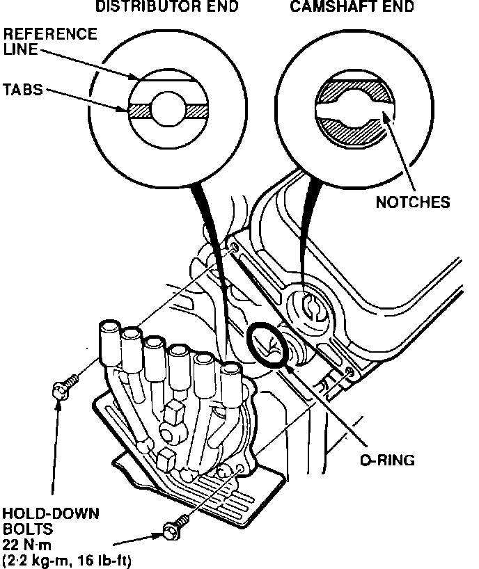
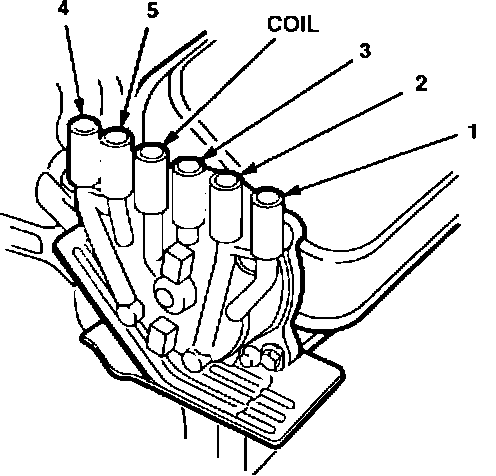
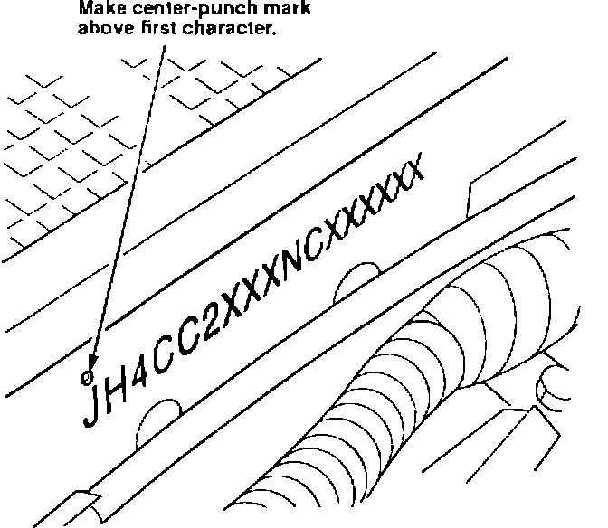

Campaign - Engine Hard to Start
BULLETIN NO.93-008
YEAR
1993
MODEL
VIGOR
VIN APPLICATION Thru JH4CC2...PC003447
April 6, 1993
Product Update: 1993 Vigor Distributor Cap
BACKGROUND
The engine may be hard to start. An improved distributor cap eliminates this problem.
CUSTOMER NOTIFICATION
Owners of affected vehicles will be contacted by mail and asked to take the car to a dealership for repair. The text of the customer letter is included in this service bulletin.
CORRECTIVE ACTION
Replace the distributor cap and engine harness cover with the updated parts in the kit listed under PARTS INFORMATION.
1. Remove the two bolts holding the rear heat shield. Pull the heat shield up slightly to release the bottom tab. Push the heat shield down out of the way.
2. Disconnect the spark plug wires and coil wire from the distributor cap.
3. Remove the three harness cover mounting bolts. Remove the cover and disconnect the vent hoses. Discard the harness cover.
4. Remove the distributor hold-down bolts, then remove the distributor. Note the position of the distributor drive tabs and the reference line on the end of the shaft
5. Remove the distributor cap. Install the new distributor cap from the kit.

6. Apply a light coat of oil to the O-rings. Verify that the tabs and reference line on the distributor drive are in the same position as noted in step 4, then install the distributor.
NOTE:
Although the distributor drive tabs are off set, it is still possible to install the distributor 180~ out of phase. Check the position carefully before installation.
7. Connect the vent hoses to the new engine harness cover. Install the cover with the original bolts.

8. Connect the spark plug wires and coil wire to the distributor cap.

9. Install the rear heat shield. Make sure the bottom tab is in its slot.
10. Center-punch a completion mark above the first digit of the engine compartment VIN.
PARTS INFORMATION
Distributor Cap Kit: P/N 06302-PV1-305
WARRANTY CLAIM INFORMATION
Operation number: 117170
Flat rate time: 0.5 hour
Failed P/N: 30102-PV1-A04
Defect code: 617
Contention code: J65
Text of Customer Letter
April 1993
Product Update: Vigor Distributor Cap
Dear Vigor Owner:
A problem may exist with your car's distributor cap that could cause the engine to be hard to start.
An improved distributor cap is now available. Please call your Acura dealer and schedule an appointment to have it installed. This update will be done free of charge. Please plan to leave your car at the dealer for at least half a day to allow him flexibility in scheduling.
We apologize for any inconvenience this product update may cause you; however, our main concern is the continued trouble-free operation of your Vigor. If you have any questions, please call or write:
Acura Customer Relations Department
1919 Torrance Boulevard
Torrance, CA 90501-2746
(800) 382-2238